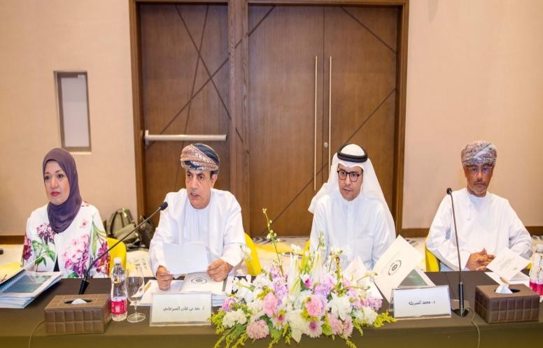

ملتقى · الكويت
ملتقى · الكويت
مشغل تربوي · مسقط
المركز يجمع خبراء الدول الأعضاء في مسقط حول الإطار الاستراتيجي للتعليم العام
افتتح ممثل وزارة التعليم في سلطنة عُمان المشغل التربوي حول «الإطار الاستراتيجي للتعليم العام في دول مجلس التعاون لدول الخليج العربية»، بمشاركة مسؤولين واختصاصيين في السياسات التعليمية والتخطيط الاستراتيجي وتطوير المناهج من وزارات التربية في الدول الأعضاء.

ملتقى · الكويت شراكات
شراكاتالمركز والمنظمة الإقليمية لحماية البيئة البحرية يبحثان التعاون في التعليم والاستدامة
 مجلس الأمناء
مجلس الأمناءمجلس أمناء المركز يعقد اجتماعه الثاني والأربعين في دولة الكويت

العدد الجديد · مجلة مستقبليات تربوية · 2026
من البيانات إلى القرار: كيف تعيد تحليلات التعلم تشكيل منظومة صناعة القرار التربوي؟
«بناء منظومات مسؤولة وفاعلة لتحليلات التعلم، تدعم عمليات صنع القرار، وتحسّن ممارسات التعليم والتعلم.»
130 صفحة · متاح للتحميل
أحدث الإصدارات
كل الإصدارات


من الأرشيف
تصفّح الأرشيف حسب السنة1994
برنامج في التهجي للصفوف الأربعة الأولى من المرحلة الابتدائية
120 صفحة1995
العزوف عن القراءة بين الشباب العربي الخليجي
190 صفحة1996
الأرقام العربية: نشأتها وتطورها التاريخي
70 صفحة1997
تعليم الأطفال بطيئي التعلم بمراحل التعليم العام
173 صفحة2000
دليل التقويم الشامل للمدرسة في دول الخليج العربية
168 صفحةالنشرة البريدية
أحدث الإصدارات والفعاليات، في بريدك
رسالة دورية بما ينشره المركز. تلغي اشتراكك بنقرة واحدة من أي رسالة.